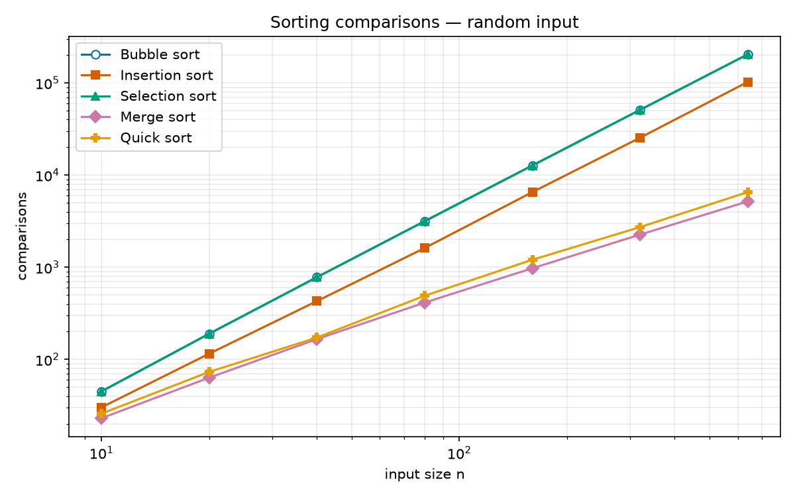
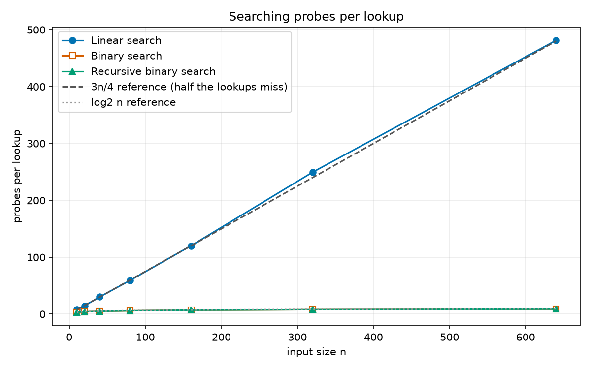
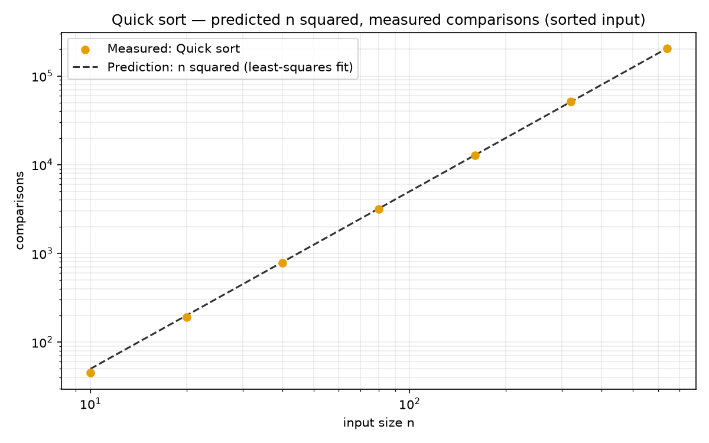
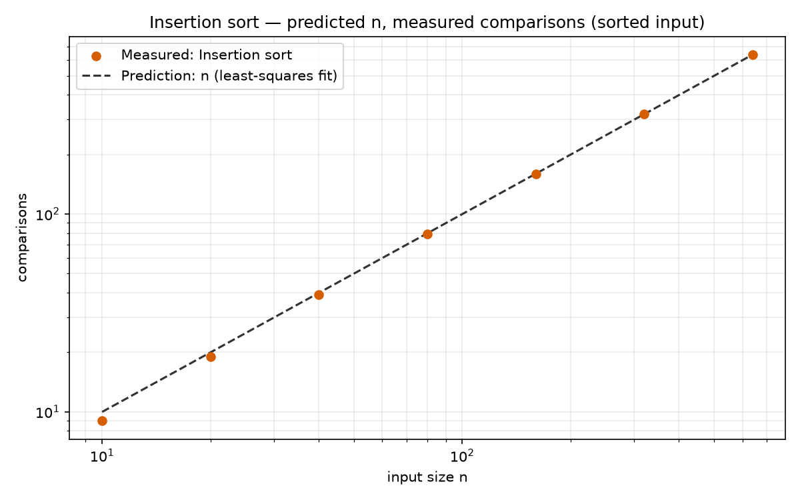

Sorting and searching, measured
Five sorting algorithms and three searches that count their own work instead of timing it, so the numbers are exact, repeatable, and can be checked against Big O.
The result


Does the theory match?
Big O says how the work grows when the input grows. The doubling question: if the list gets twice as long, how much more work? About 2x for n, a little over 2x for n log n, and 4x for n squared. We ran every algorithm at sizes 320 and 640 and divided, and the ratios land where the theory says, with two instructive exceptions.
The full explanation, with a table of predicted and measured numbers for every algorithm, is in BIG_O.md. A script, scripts/check_big_o.py, re-checks every number in those tables against the data.


How it is built
Every algorithm is a class. Abstract parents own the steps that must always happen; children write only the algorithm. Amber boxes are abstract, blue are concrete. Solid arrows mean "inherits from"; dashed arrows mean "uses".
Read the code
quick.py | A concrete sorter: partitioning around a first-element pivot, and why that makes sorted input the worst case. |
recursive.py | The abstract recursive base: a child of Sorter that adds depth tracking, itself the parent of merge and quick sort. |
manager.py | The one class that knows the whole system: it runs everything and returns rows, with no printing or drawing. |
plotter.py | Turns results into pictures and nothing else. |
test_sorters.py | Tests whose expected counts for a three-item list are worked out by hand in comments, not copied from the program's output. |
How one agent directed another
This repository was built by AI agents, and the way they talked to each other is part of the display. A foreman agent wrote a numbered prompt for each step, saved in sidecar/prompts/completed, and the builder wrote a matching report in sidecar/reports with the same number and name. Each prompt says why the work matters, what the constraints are, and an acceptance test that could fail. The report has to show the commands it ran and say honestly what it did not finish. A reviewer then checked the result before it was merged.
More
- The report (PDF): the same results as a short paper.
- AGENTS.md: the working rules every agent here follows.
- sidecar/DESIGN.md: the plan the classes were built from.